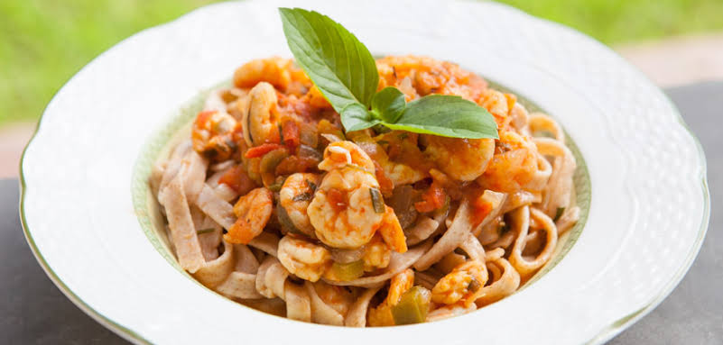
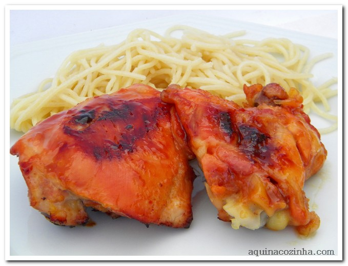

Suco de Couve com Laranja
- 2 Folhas de Couve Manteiga
- 2 Laranjas
- 1 Litro de Água
- Adoçante ou Açúcar
Kombucha
- 2 litros água
- 3 colheres (sopa) chá verde, preto, mate ou hibisco
- 0,5 xícara açúcar cristal
- 2 colheres (sopa) vinagre de maçã
- 1 unidade scoby (colônia-mãe de bactérias e leveduras)
Salada com damasco e gergelim
- 1 maço de alface gourmet
- 1/2 maço de mini rúcula
- 1 xícara de chá de damascos picados
- 1/2 vidro de palmito picado
- 1 colher de sopa de gergelim branco
- sal, azeite e limão a gosto
Salada de atum
- 1 lata de atum light
- 1/2 cebola pequena em cubinhos
- 1/2 lata de ervilha escorrida
- 1/2 lata de milho escorrido
- 1 tomate vermelho sem sementes em cubinhos
- 3 colheres (sopa) de maionese light
Salada de folhas com gengibre
- 1/2 maço de folhas diversas
- 10 tomatinhos
- 1 pedaço pequeno de gengibre fresco
- sal e pimenta moída na hora a gosto
- aceto balsâmico a gosto
- 1 fio de azeite de oliva extra virgem
Tabule de quinoa
- 1 xícara de chá de quinoa em grãos
- 1 xícara de tomates em cubos sem sementes
- 1/2 xícara de chá de cebola em cubos
- 1/2 xícara de café de azeite
- 5 colheres de sopa de limão espremido
- 3 xícaras de chá de água
Crispy de frango empanado
- folhas de alface lisa
- folhas de agrião
- 2 bifes de frango grandes e já prontos
- 1 ovo
- farinha de aveia
- azeite para grelhar os empanados
Tartare de salmão
- 400 gramas de filé de salmão
- 1 colher de sobremesa de suco de limão siciliano
- raspas de 1/2 casca de limão
- 1 colher de sopa de azeite de oliva
- 1 punhado de endro ou dill
- sal e pimenta do reino à gosto
Carne moída com abóbora
- 300g de carne moída magra
- 700g de abóbora cortada em cubos
- 1 cebola picada
- 1 tomate picado
- ½ xícara de molho de tomate
- sal e pimenta do reino

Camarão com macarrão integral
- 500 gramas camarão
- 400 gramas macarrão integral
- 5 tomates picados
- 1 cebola picada
- 1 pimentão picado
- 2 dentes alho picado
Ratattouile light
- 1 tomate
- 1 pimentão vermelho ou amarelo
- 1 cebola
- 1/2 xícara de uva passa
- 1 berinjela
- 1 abobrinha

Frango com mel e gengibre
- 8 pedaços de frango
- 1 laranja (suco)
- 2 colheres de mel
- 1 colher de gengibre ralado
- 3 dentes de alho amassados
- 2 colheres de azeite